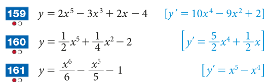
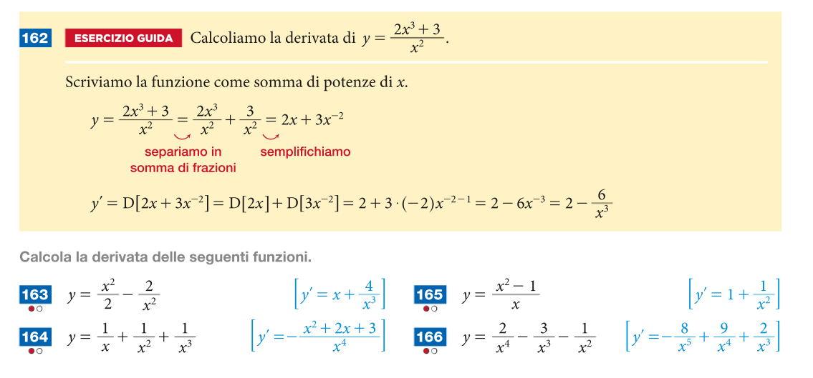
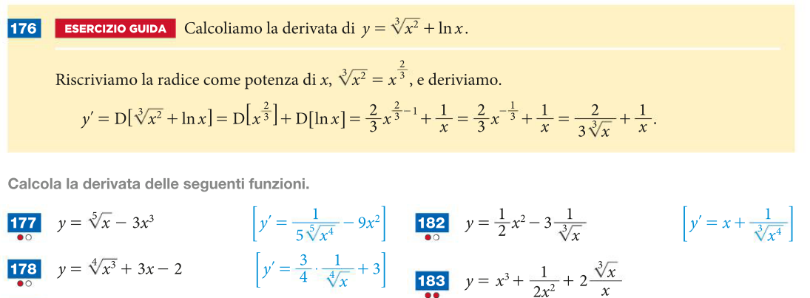

Compiti per casa
Derivate fondamentali
\(\left(ln(x)\right)' = \dfrac{1}{x}\,\,\,\,\)
\(\left(e^x\right)' = e^x\,\,\,\,\)
\(\left(sin(x)\right)' = cos(x)\,\,\,\,\)
\(\left(cos(x)\right)' = -sin(x)\,\,\,\,\)
\(\left(b\right)' = 0\,\,\,\,\,\)
\(\left(x^{\alpha}\right)' = \alpha\,x^{\alpha - 1}\,\,\,\) con \(\alpha \in \mathbb{R}\,\,\,\,\,\)
\( \begin{align*} \left(tan(x)\right)' &= \dfrac{1}{cos^2(x)} \\\\ &= 1 + tan^2(x) \end{align*}\,\,\,\, \)🔥
Regole di derivazione
\(\left(c\,f(x)\right)' = c\,f'(x)\)
\(\left(f(x) + g(x)\right)' = f'(x) + g'(x)\)
Esercizio 1
Svolgere gli esercizi n° 159, 160, 161, 162, 163, 164, 165, 176, 177, 182 a pag. 1020 del libro di testo (volumen 4A).


